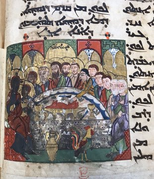
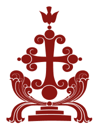
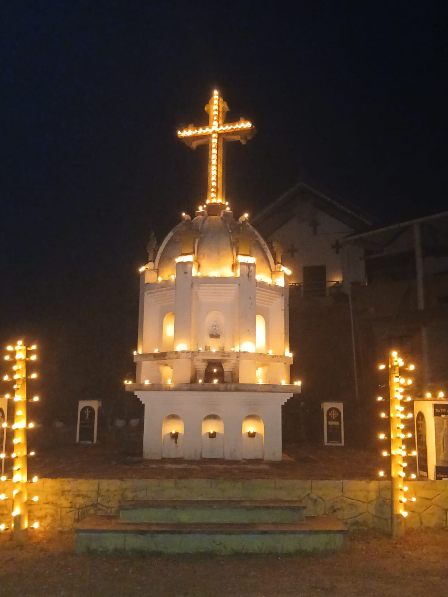
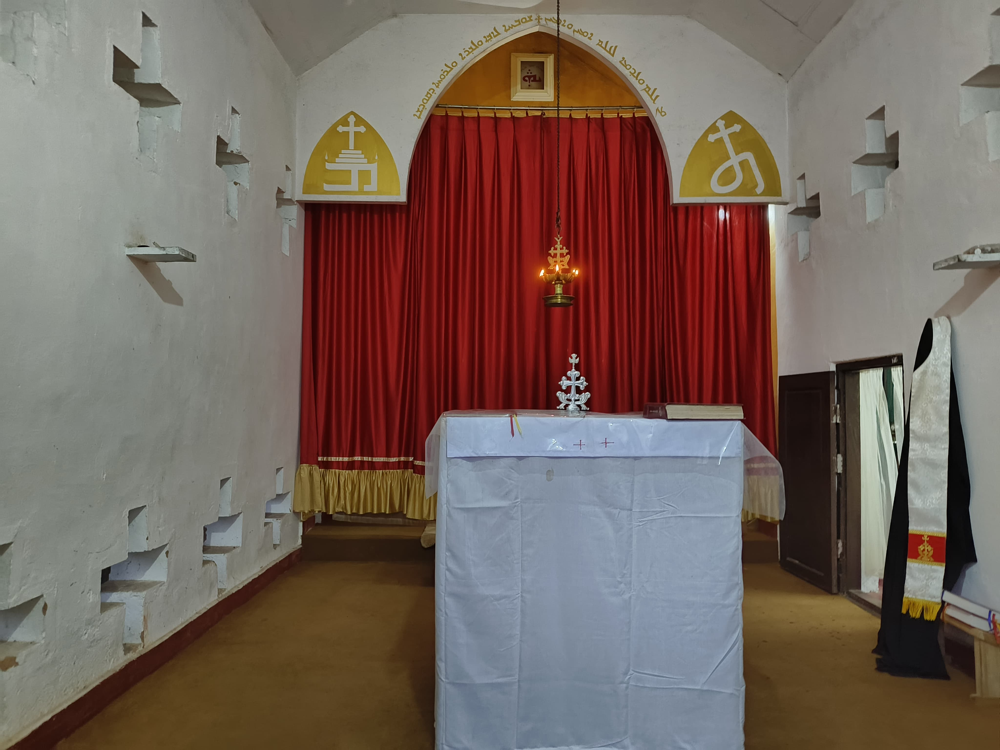
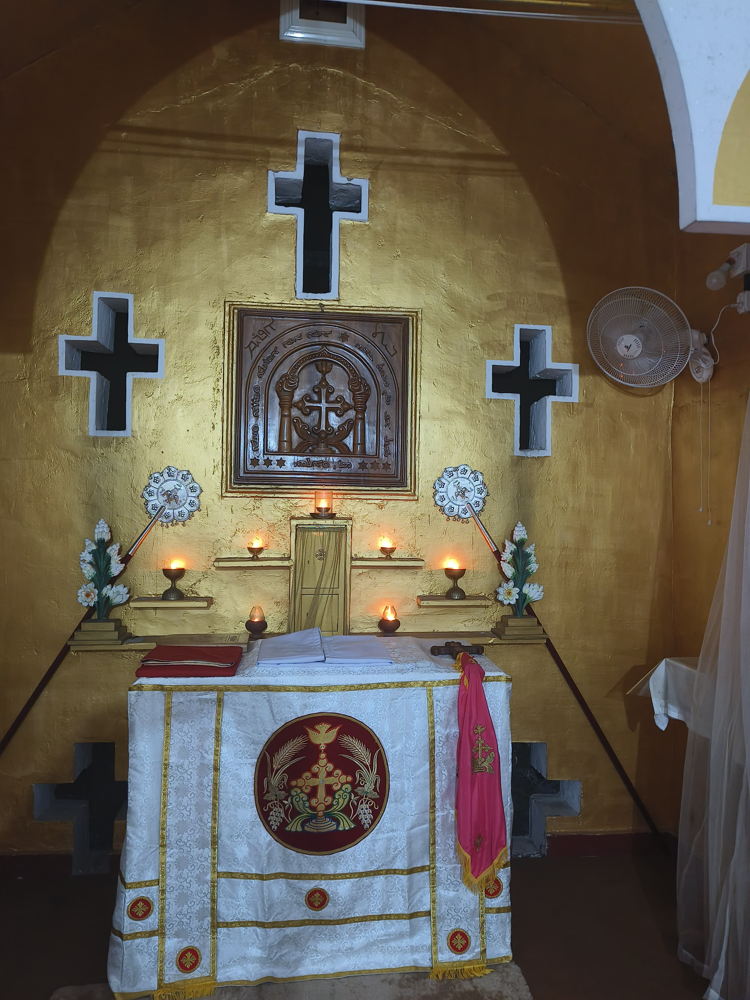
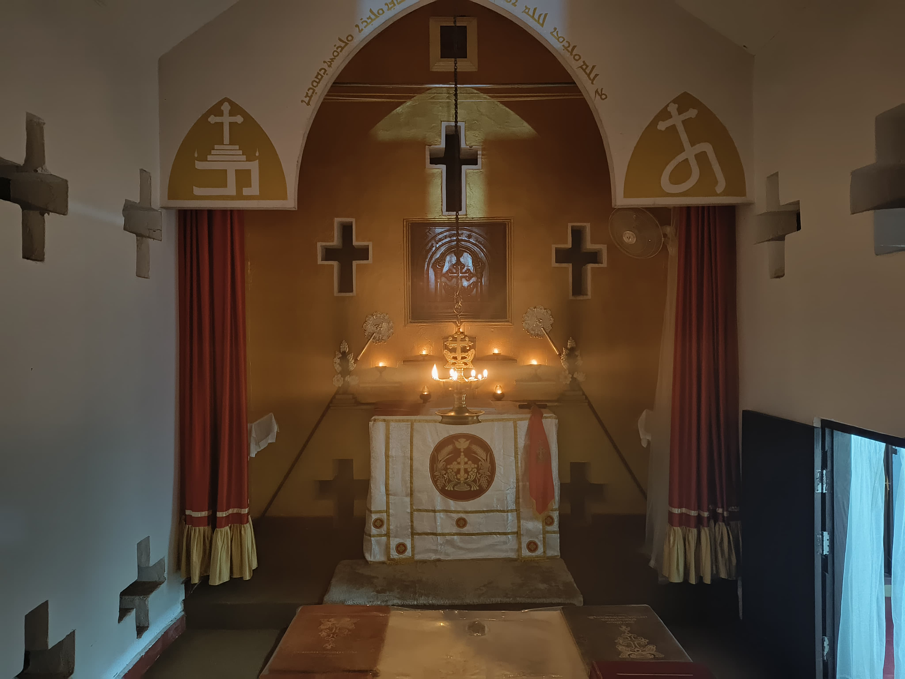
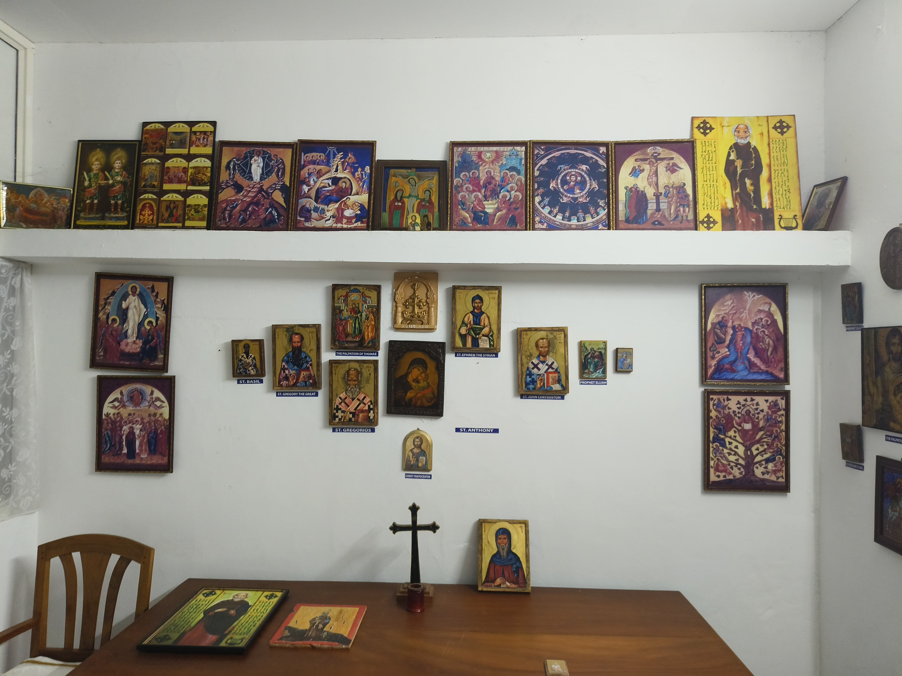
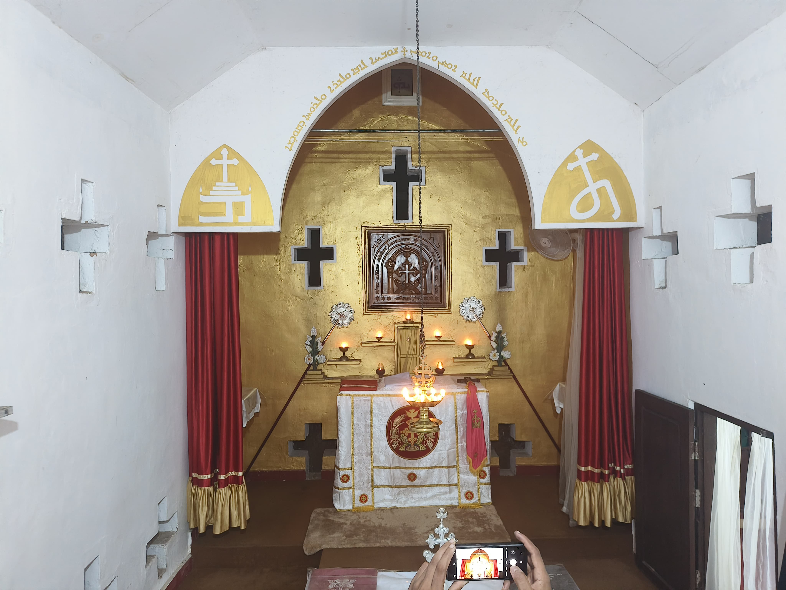
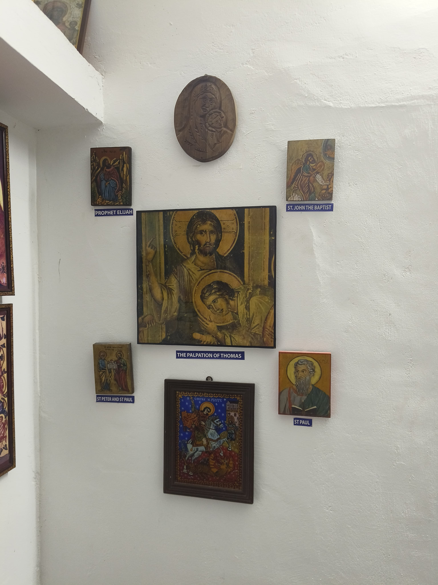

Beth Aprem: Nazrani Dayra

Introduction
Christianity in the beginning was an Aramaic speaking community. Jesus, Mary, the apostles, the disciples and the first followers of the Messiah were Aramaic speakers. But towards the middle of the first century large number of Greek speaking peoples came to it. Thus the Aramaic oral gospels of the first half of the first century got transplanted into the Greek written down gospels.

Msiha became Christos; Msihaye became Christians; sliha became apostolos; Kepa became Patros; Thoma became Didymos; qassisa became presbyteros. A careful reading of the New Testament reveals the earliest Aramaic substratum of Christian origins. Gradually Christianity spread in the Greek and Latin speaking Roman empire and the Aramaic speaking places of the Persian empire. A bilingual (Greek or Aramaic) situation prevailed in the bordering regions.
In the first and second centuries of Christian era the Aramaic speaking Christians developed their language into Christian Aramaic or so-called Syriac. Thus we can speak of Christian Aramaic (Syriac), Greek and Latin branches of the tree of Christianity. This is a three-dimensional approach to Christianity which brings together all the followers of Christ. The Greek and Latin branches spread Westwards, whereas the Christian Aramaic branch spread Eastwards, giving rise to Greek, Latin and Syriac Churches before the fourth century. Without any one of these three branches Christianity will not be what it is.
Mar Thoma Nazranis
Until the year 50 A.D. apostle Thomas preached the gospel in the Aramaic speaking parts of the Persian empire (and North West India) and established Christian communities there. Aramaic speaking Jews of these regions made his task rather easy. In 50 A.D. he came to the royal city of Muchiri (Muziris of the first century Greek writers) and landed at Maleyamkara. It was the then capital of Chera dynasty in South West India.

Thomas came because of the Aramaic speaking colonies of Jewish community in that region. Along with many local Buddhists, Jainists and others they too became followers of the Way (Margam) of Jesus Christ proclaimed by Thomas. He organized them into seven ecclesiastical units with royal privileges. Thomas was martyred in 72 A.D. and his tomb is venerated even today in Mylapoor near Chennai, South East India.
The Christians of India are known as Mar Thoma Nazranis because of apostle Thomas who brought the Margam of Jesus the Nazarene. Europeans who happened to come across this community called them Christians of St Thomas. Between 72 A.D and 167 A.D. it underwent a severe persecution. Soon after the persecution it came into contact with Christians of Persian empire.
Cherishing their filial devotion to Thomas, they established official ecclesiastical links with Persian Church before the Council of Nicea. The South Indian stories of Thomas had reached Edessa via Persia before 180 A.D. and formed the basis for the Acts of Judas Thomas (written by 200 A.D. and re-written by 250 A.D.). The Syriac Acts were adapted into Greek, Coptic, Latin and other languages. Syriac, Greek and Latin Fathers of the Church attest to the missionary works of apostle Thomas in India.
The Mar Thoma Nazranis followed the Law (Way and Tradition) of Thomas and became Church of Kolla Hendo ruled by the Arkadiakon of Pakaiomattarn under the Throne of Thomas. The Churches of Malankara had its own system of self-rule and way of life. From the very beginning until the middle of the fourteenth century the See of Thomas was at Mahadevar Pattanam (the City of the Great God) near modern North Paravoor. In spite of the Vedic religious revival and caste system propagated by Sankaracharya in the 8th century A.D. and the Islamic incursions in the 9th and 10th centuries in Keralam, the Nazrani community flourished in India until mid-fourteenth century.
In 1498 the Portuguese came to India and soon followed the missionaries from the Latin West. They were surprised to find Thomas Christians with their East Syriac liturgy and theologically different Christian heritage. The missionaries tried to impose a Latin version of Christianity over these local Nazranis and this led to a period of latinization - voluntary or imposed - intensified in 1599 and continued thereafter (even today under native bishops!).
As a result of this the one (already latinized) East Syriac Nazrani community was split into two groups in 1653. The majority group came to be ruled by Latin missionary bishops and the minority group gradually came under West Syriac or Antiochean rule. Thus the connections with the East Syriac Church were practically broken by both factions. But both groups wanted and tried to be united again as a single community under their own bishops.
By the year 1825 the Antiocheanized branch began to feel the impact of Protestant ideas, also because of Western Latin (non-catholic) missionaries. The constant struggle of the majority group under Latin Catholic missionary rule, for local bishops following the East Syriac theologico-liturgical heritage, is an epic without comparison in the history of Christianity. Their efforts were partially crowned when Pope Leo XIII reconstituted them under the ad hoc name "Syro-Malabar" under Latin bishops first and then under latinized and latinizing local bishops towards the end of 19th century. Today they have become the most numerous group forming the mainstream Christian tradition in India.
An Ecumenical Dream of Unity through Restoration and Renewal
During the past four hundred years of confusion the one Mar Thoma Nazrani community got split up into many groups. Today it seems that the unity is lost for ever. But unity, restoration and renewal of all Mar Thoma Nazranis is an ecumenical dream we can still cherish, work and live for. There were great prophetic advocates of that dream in the past and it is because of their admirable efforts that we see a glimmer of hope.
The past four centuries of ecclesiastical and theological colonialism has left many unwelcome traces on the Christianity in India. We need to re-orientalize, and re-orient the Church at large. That means a restoration and renewal lasting for the coming four hundred years, to re-establish the St Thomas Christian spiritual, liturgical, ecclesial, missionary, theological ways in all its originality and purity.
This is to be aimed at unity, ongoing Christian formation through study of the Syriac heritage, re-orientation of the present ecclesial perspectives and an onward journey in faith and a pilgrimage in hope towards future unity, all the same not forgetting the riches of the common past, not neglecting the problems of the present and not deviating from the challenges on the way to the future.
In view of all these we would like to recapture something of spirit of the East Syriac Christian tradition known for its monastic, biblical, liturgical, missionary, pastoral schools since the time of Mar Aprem (c.306-373) under whom the famous schools of Nisibis and Edessa began to flourish. From the fourth until the seventh century and even thereafter such monastic schools nourished the Syriac Christian formation at all levels.
The Malpan system of the Mar Thoma Nazranis has to be revived in so far as it is helpful today. Regular gatherings and study groups to foster, live, realize and spread the above vision will have to be conducted. Research, publication and ongoing formation of children, laity, seminarians and priests are part and parcel of this vision. For realizing all these we need your prayer, encouragement, active involvement and support in every possible way.
Nazrani Dayra
Nazrani Dayra is the local name given to an East Syriac semi-monastic foundation officially started on the 20th of March 1999. Rev Fr John Bosco Thottakkara and I went on that day to the birth place of Paremmakkal Thoma Kathanar (1736-1799) in order to pray and light a lamp. Fr Emmanuel Thelly joined us at Ramapuram at the tomb of Paremmakkal. After prayers a candle was lit. Some twenty priests and nearly one hundred people joined us.

The candle light procession led us to the statue of Mdavrana d-kol Hendo in the courtyard of the Church. Three of us sung Laku Mara and Qandisha Alaha. Then we led small group of priests and laity to the house of Paremmakkal with the lighted torch from the tomb. The lamp lit there two hours ago was still burning. I mixed the two lights in prayer I drew some water from the ancient well and all of us drank from it after washing our feet, hands and face. The famous well was made by the pious mother of our beloved Metropolitan and Gate of All India.
"The past four centuries of ecclesiastical and theological colonialism has left many unwelcome traces on the Christianity in India. We need to re-orientalize, and re-orient the Church at large."
In his famous Varthamanappusthakam Paremmakkal speaks of a Seminary and Library for the oriental education of Mar Thoma Nazranis. Remembering this vision, Fr John Bosco and I took the lighted torch to Paurastya Vidyapitham at Vadavathoor. All others went to the one day seminar at Palai to celebrate the bi-centenary of Paremmakkal. After keeping the lighted lamp at Vadavathoor we joined others in Palai for the seminar. Thus we celebrated the two hundredth death anniversary of our saintly and prophetic leader.
Purpose and Vision
There were two additional reasons why the year 1999 was chosen for the foundation of Nazrani Dayra. The twentieth century monk and ecclesiastical luminary Revd Dr Placid J.Podipara was born in 1899 and we see a spiritual and theological continuity between Paremmakkal and Placidachan. One hundred years after the demise of Paremmakkal God sent another prophetic teacher to resurrect the All India Church of Mar Thoma Nazranis.
The Revd Dr Thomas Vellilamthadam had published two important theological documents, African Payal (1984) and Countdown to 1999 (1985). In 1992 I had emphasized the need of all St Thomas Christians coming together in 1999 to undo the evils of Diamper 1599. Four hundred years of divisions should disappear! 1999 should start a process of ecclesial restoration, spiritual renewal and theological orientalization among the scattered Mar Thoma Nazranis. The evils of Diamper 1599 should end in 1999. Instead of the past four hundred years of lost opportunities we need another four hundred years of reconstruction and reparation.
Personal Journey
As a child I was fascinated by the occasional celebration of liturgy in Christian Aramaic popularly called Syriac. Many Thomas stories from my "pious and proud Mar Thoma Nazrani" mother set an indelible mark on me in those days. During the years 1970 and 1972 this Syriac call had a lasting impact on me. This finally led me to the Seminary where I made some elementary studies in Syriac.
Since the Syro-Malabar Seminaries had already left out Syriac from the syllabus I did not get much to quench my thirst. But the very little I learned under Revd Fr George Plathottam and Revd Fr John Kunnappally inspired me further. I began to visit Malpan George M.Puthenpura the last Syriac Malpan of Mangalapuzha Seminary. After teaching it for four decades he was retired in 1972. Since he was the cousin of my paternal grand father I got some of his Syriac collection. Until his death he was sorry for the Syro-Malabar Church which neglected Syriac studies.
My Seminary Rectors Revd Dr Joseph Mattam and Revd Dr Geevarghese Panicker implanted in me a special love for the All India Church of Mar Thoma Nazranis. In 1980/81 I approached Revd Dr Geevarhese Panicker then Rector of Mangalapuzha Seminary. As the General Prefect of students I wanted a Syriac course to be introduced in the syllabus of the Seminary. With his encouragement and support I presented the need before two Syro-Malabar Professors who knew some Syriac. Both of them were products of Vadavalhoor Seminary!
To my great shock and despair they declined with a remark: "Why study Syriac? It is of no use! Moreover it will cause problems in the seminary". Then I put the same demand before Revd Dr Soosa Pakiam (at present the Latin Archbishop of Trivandrum). Though he was from the Latin Church he replied. "It is very good that you Syrians study Syriac. I studied it as a second language when I did my biblical and liturgical studies. I could have taught you. But that may offend the Syro-Malabar priests who should have taught you Syriac. What will they think when a Latin priest start teaching Syriac to a few Syro-Malabar seminarians?" I gratefully appreciated his goodwill and said: "I will remember this goodwill. You are right. I am very grateful that you realize the importance of us Syrians learning some Syriac. You need not take up this on yourself in the present situation." This incident only increased my convictions regarding Syriac studies.
In 1983 Mar Joseph Pallickaparumpil sent me for Patristic Studies. Then I wanted to go to Malpan George M.Puthenpura for a month to study Syriac and I told the bishop: "My generation has a serious complaint against your generation: Your generation got the chance to study and enjoy the liturgy in Syriac, a blessing my generation did not get. We lost the heritage of our parents". He told me: "You are right. Better you go to Fr.Placid who is residing at Chethipuzha". Thus I got the good fortune to be "last disciple" of Fr.Placid (in his own words, which came true as he became so weak and unhealthy to teach any one else as I left his feet). So in the month of August in 1983 I got initiated further into Syriac Studies.
Under Dom Jean Gribomont my Syriac theological convictions grew up. Though he wanted me to go to Iraq, the Iran-Iraq war prevented it. Then he sent me to Prof Dr Sebastian P.Brock. Gribomont's unexpected demise was a real personal loss. Some five of us were in the last lecture of Gribomont who stated after the lecture: "This might be my last class...as I have an operation fixed.. .But you Thomas, you should come to me tomorrow morning!" I did go, but he was no more! My yearly meetings with Dom Edmund Beck were another source of inspiration. Finally, Brock my Malpan Malpane, introduced me to the luminous world of Mar Aprem and Mar Ishaq. I am grateful to Archimandrite George Mifsud and Prof Johannes Madey for their encouragement in the growth of my convictions.
Historical Context of Mar Thoma Nazranis
Long hours of discussions with many of my fellow Thomas Christians led me to the conclusion that the maladies of Hendo Nazranis are Latinization (Romanization and Protetantization), Antiocheanization and Orthodoxization and these are very modern issues. The All India Church of St Thomas Christians who was in communion with the Church of the East got fragmented only after the arrival of European Christians in India. This fragmentation happened only after 1599, though indirect and often forcefully imposed latinization took place even before that year.

Diamper 1599 was only the culmination and consolidation of a long process. An ever-increasing latinization can be observed before Diamper. The heroic struggles of Arkadiakon Geevarghese daMsiha and Arkadiakon Geevarghese daSliva fostered the ecclesial identity and unity of all Thomas Christians. But on January 3rd, 1653 St.Thomas Christians declared freedom struggle and independence. But the already latinized Thomas Christians became divided into two sections: Old Party (East Syriac) and New Party (West Syriac). Old Party got more latinized; the New Party got antiocheanized, though the latinized East Syrian elements were followed for a time. Then the West Syriac liturgy was written in East Syriac to make it understandable and acceptable to the New Party. This process began in 1665 though gradually West Syriac did away with East Syriac by the year 1825. But the New Party kept up the pronunciation of many words in East Syriac manner. This linguistic vestige is seen even today. The antiocheanized New Party came into contact with Protestant missionaries that led to its protestantization and birth of Mar Thoma Church in the 19th century.
The Old Party struggled to survive even with a latinized identity. But the praiseworthy efforts of Parampil Mar Chandy, Kariyattil Mar Yausep Malpan, Paremmakkal Mar Thoma Kathanar, Thachil Matthu Tharakan, Kudakkachira Mar Anthony Kathanar and Nidhiry Mar Mani Kathanar kept up the Syriac, apostolic and Indian identity to some extent. Twentieth century luminary of this Church is none other than Malpan Placid J.Podipara who handed over the oriental light to Guru Yohend (Punnoose Arkadiakon) alias John Bosco Thottakkara and Malpan Emmanuel Thelly. We cannot forget the name of Cardinal Eugene Tisscrant who, with the help of Malpan Placid, redrew the boundaries of this Church.
The one East Syriac Church of Mar Thoma Nazranis got divided into two parties in 1653 and both groups failed to regroup under one leader. This will lead to an ever growing tendency of disintegration and division. One can observe a tree depicting various divisions or branches.
Mar Thoma Nazranis (50-1599), with an East Syriac liturgy. (Southists appear by 9th century).
- 1-2. Old Party and New Party (1653-1665). The New Party adopt the West Syriac liturgy only after 1665.
- 2.1. New Party: Independent Syrian Church of Thozhiyoor (1772).
- 2.2.1-3. New Party: Mar Thoma Syrian Church (1837-1889). In 1952 St Thomas Evangelical Church of India and in 1971 St Thomas Evangelical Church (Fellowship) emerged.
- 2.3.1-2.New Party: Bava party and Metran party (1912). One Church during the period 1958-1971 but divided again (1973-1975) into two parties.
- 2.3.3. New Party (partially latinized): Syro-Malankara Catholic Church (1930).
- 1.1. Old Party (latinized to a greater extent): Syro-Malabar Church (1887)
- 1.1.2. Old Party: (already lantinized), nestoreanized (Chaldean Church of Trichur (1874-1907)).
Protestant and Pentecostal Churches got many from the Old and New Party in the 20th century. In the ultimate analysis they are all latinized. (They are like their Latin western counterparts).
One East Syriac Church of Mar Thoma Nazranis of India became a tree of Churches, that is to say, a tree with many branches: East Syriac and West Syriac branches with non-Syriac influences. By non-Syriac influences, I mean Latin Catholic, Latin Protestant, Greek and Russian Orthodox elements. Can these Thomas Christians forget their common Syriac roots? Will they be able to share the same Semitic theological energy in future? Are they gradually going to be uprooted from their once common spiritual patrimony? Whatever be the present dividing factors could they not come together to form a confederation of Churches without sacrificing whatever identity it has achieved at present? Will they remain stagnant in the problems of the colonial period? Is there a way out of the painful past since 1599? Four hundred years of the past calls for another four centuries of restoration and reparation. These questions had been haunting my mind for the past three decades and a humble answer, a very personal discovery finds expression as Nazrani Dayra. Its gates are open for all who seek, study, appreciate, love and live the Syriac heritage of Mar Thoma Nazranis of India and abroad. It will try to rediscover all what is common to the Christian East which is essentially Syriac.
Purposes of Nazrani Dayra
The Nazrani Dayra is established with the following purposes:
- Live according to the traditional spiritual heritage of Mar Thoma Nazranis.
- Live and propagate the liturgical spirituality of the East Syriac Church.
- Learn and teach Christian Aramaic (Syriac).
- Conduct Malankara Malpanate.
- Conduct Sliva School.
- Conduct Hendo Academy.
- Collect, study and publish in Syriac, Malayalam and English, the theological sources of the East Syriac tradition, especially those of Mar Thoma Nazranis.
- Promote Paremmakkal Library.
- Publish a periodical called Nazrani.
- Try to re-establish the ancient social unity of Mar Thoma Nazranis.
- Restore the ecclesial vision of Paremmakkal, Kariyattil, Thachil, Kudakkachira, Nidhiry, Podipara and Thottakkara.
- Acquire and propagate the ecclesial life style rooted in the Mar Thoma margam.
Looking Forward
1999 should have inaugurated a new chapter in the history of St Thomas Christians. Seven years since the foundation of Nazrani Dayra are past. In 2006 we celebrate the 17th birth centenary of Mar Aprem Malpan (306-2006). So the chapel of Nazrani Dayra will be dedicated to the "Harp of the Holy Spirit". There will be four biblical pillars for the Dayra: two from the Old Testament - Moses, Elijah - and two from the New Testament - John the Baptist and Thomas. Two patristic pillars will be Aprem and Ishaq, the two luminaries of the Christian East.

The Dayra will also be known as Beth Aprem and the chapel will be dedicated to this great mystic, poet and theologian. The holy names of Qandise Mar Sapor, Mar Proth, Parampil Mar Chandy, Archdeacons Mar Geevarghese daMsiha and Mar Geevarghese daSliva will be remembered as five early Indian pillars. Nazrani heroes Paremmakkal, Kariyattil, Thachil, Kudakkachira, Nidhiry, Podipara and Thottakkara will be the seven later Indian pillars. Thus twelve Hendo pillars support the Church of Hendo. All Syriac Fathers headed by Aphrahat will teach us. Ignatius of Antioch, Justin, Tatian, Irenaeos, Clement of Alexandria, Origen, Athanasios, Anthony the Great, Basil, Gregory the Theologian, Gregory of Nyssa, Diodore, Evagrios, John Chrysostom, Theodore the Interpreter, John of Damascus and their friends will be dear to us. The Rambans and Malpans of Nisibis and Urhai will be with us. Malyamkara, Palayur, Paraur, Kokamangalam, Niranam, Kollam, Chayal, Maylapur and all other Churches of Kol-Hendo will honour the mother cities of Mar Aprem.
Liturgical celebrations of the Dayra will recover the use of East Syriac as far as possible. Qurbana should be celebrated at least partially in East Syriac language. Qurbana will be celebrated in the most ideal form as envisaged by the Syro-Malabar Synod. The Syro-Malabar Synod of Vatican solemnly declared in 1996: "The Synod of Bishops of the Syro-Malabar Church held in the Vatican from 8 to 15 January 1996 at the end of the deliberations makes the following statement... After due deliberations and consultations the Synod has decided to do the following with regard to the liturgical order... the following immediate steps will be taken... Establish wherever possible places of prayer in which the Syro-Malabar liturgy in its integrity can be celebrated with solemnity and available for the faithful for participation".1 One cannot but point out a blatant discrepancy in the officially published version of the Statement of the Synod which reads: "...the Synod wishes to take the following as immediate steps..."2 The phrase "the Synod has decided" is deliberately falsified into "the Synod wishes". After making the decision the Synod made it into a wish! Even after ten long years the decision remains unexecuted and the wish unfulfilled. The "immediate steps" are not taken though ten years are over! But the Church has to obey the decision, wish and statement of the Synod without further delay! Hence Nazrani Dayra will execute this decision and follow the wish of the Syro-Malabar Synod of the Vatican by establishing a liturgical centre and house of prayer. It will aim at the most ideal celebration of liturgy and try to follow liturgical spirituality.
In the Nazrani Dayra there will not be any liturgy without some prayers in Christian Aramaic, popularly known as Syriac. Liturgical, linguistic and musical formation in the East Syriac tradition will be given. Use of Syriac tunes in liturgy and other prayers will be fostered. Qurbana will be celebrated only on Sundays, Wednesdays, Firdays and Feastdays. A parallel to the parish liturgy should never happen in the Dayra. Celebration of baptism can be allowed in the Dayra chapel if and when proper ecclesiastical authorities permit it and if parents agree to avoid all laxury and pomp. Pious parents will be welcome to the Dayra and their children will have many opportunities to be trained in traditional St Thomas Christian lifestyle and spirituality.

Days of the Dayra begins with Ramsha for all liturigal celebrations and observations. Wednesdays and Fridays will be Fasting Days in the Dayra. The life style of Dayra will be normally vegetarian. Sauma Ramba (50 Noyampu), 25 Noyampu, 50 days of the Apostles, 15 Noyampu, 3 Noyampu, 8 Noyampu, 12 Fridays after Nativity, Of Elijah and Sliva, Of Kepa and Paulose, Of the Virgins, Of Nazrani Mothers, Of Aprem, Of Geevarghese Sahda, and all other Fast Days of Mar Thoma Nazranis. The traditional ascetical life style of Mar Thoma Nazranis will be closely followed.
There will be daily readings from Paremmakkal's Varthamanappusthakam Weekly talks on the Fathers of the Church, Syriac Monasticism, History of Mar Thoma Nazranis, Liturgical Spirituality, etc will be held. Daily Patristic Readings will be conducted for all who are interested. All will be taught some select prayers in Syriac. Mar Thoma Nazrani parents with their new-born child will be able to perform the rite of giving their child honey, milk and gold preferably in connetion with baptism. Choroot ceremony of children will be conducted for children. Initiation of children to learning (traditional Vidyarambham for Nazranis) will be held on the days from Pentecost to the Day of Mar Aprem Malpan (9th June).
Even children will be encouraged to recite some basic prayers in Syriac. Daily Syriac and Malavalam Gospel reading sessions will be held as an essential part of Nazrani formation. These reading sessions will be open for all. Seven times prayer will be practised in the Dayra. The times of prayer will be at 3pm, 6pm, 9pm, 3am, 6am, 9am and 12 noon. The public will be welcome to the Dayra for the Ramsha (6pm) and Sapra (6am). All who are associated with the Dayra will be encouraged to follow these prayers personally, in community or in family. Bnay and Bnath Qyama are to be established under the Dayra. These groups will have to study Syriac and pray three times a day (9am, 12noon and 3pm) in Syriac. Besides, they will be praying Sapra at 6am and Ramsha at 6pm
The following institutions established on 20th March 1999 exist and function under the Dayra: Nazrani Dayra for Syriac liturgical life; Paremmakkal Library in honour of the great son of Mar Thoma Nazranis of Hendo; Malankara Malpanate and Malankara Vidyapitham for voluntary theological formation in Syriac, Biblical, Patristic, Liturgical, Monastic areas; Sliva School for the Nazrani formation of Bnay and Bnath Qyama who are to learn Syriac language, Gospels in Syriac, Liturgy and select prayers in Syriac, Church History, Monastic spirituality, Hagiography, etc; Hendo Academy for the ongoing orientalization, seminars, dialogue and publications. The School of Nisibis, Urhai and other East Syriac ones will be our inspiration in Christian intellectual formation.
The Dayra exists open for all those who are interested in the Syriac heritage of Mar Thoma Nazranis. But anything that disagrees with this particular spiritual patrimony will be discouraged. Monastic texts and rules of the Syriac and especially the East Syriac tradtion will be decisive in the lifestyle of the Dayra. All the traditional fasting days of Mar Thoma Nazranis will be observed in the Dayra. But Bnay and Bnath Qyama will be given milder options regarding the traditional fasting. Only sick and old will be exempt from this general rule.
The Syriac Institute of Nazrani Dayra will function in close collaboration with SEERI. For all practical purposes it will serve as a branch of SEERI, as long as SEERI remains faithful to its original goal of promoting Syriac Studies. Many years back I put forward the idea of starting a chain of branches for SEERI under the auspices of various Thomas Christian Churches. But unfortunately no Church has started a branch so far. I hope and pray that every St Thomas Christian Church should start its own branch of SEERI. SEERI should become the central institution around which a cluster of branches carry on the ideals of SEERI and produce ecumenical fruits. Such a group of Syriac Study Centres will be the rallying point of unity and identity of all Mar Thoma Nazranis. Four hundred years of disunity need not deter us from exploring the common elements of unity of one thousand and six hundred years. So let us foresee the coming four hundred years to start a pilgrimage towards unity in diversity. Only a return to the Syriac sources will provide us with the common roots of our unity and identity as Mar Thoma Nazranis. The invisible bonds should be rediscovered through study of Syriac theological literature.

Although Christianity is originally an Asian religion, sometimes many identify it with its European version. This is a grave misunderstanding that contradicts history. Original and the most ancient version is indeed Jewish, Semitic, Aramaic Christianity. The linear descendent of this most primitive version is none other than Syriac. Almost within a few years later it got hellenized and a Greek Christianity began to emerge. We do not all the same forget the fact that Christianity was originally born into an already hellenized Jewish world. But here we see a great transition from the Aramaic world into the Greek world that eventually gave birth to Aramaic (Syriac) speaking and Greek speaking versions. The Aramaic oral gospels became Greek written gospels during these earliest decades of Christianity. The Aramaic oral substratum underwent a gradual process of hellenization. Even after hellenization of the original Aramaic message we see it in the form of a Syriac version which struggled under an ever-growing Greek cultural and theological influence.
Christianity got two branches in the early decades of its existence: (Aramaic) Syriac and Greek. One and a half century later a Latinized version emerged as a third branch. Original Judeo-Christian, Aramaic roots of this Latin Christianity gradually disappeared, though its Greek roots lingered longer. Hellenization and Latinization went far and wide and produced the Greek Orthodox (including its various branches) and Europen (Latin Catholic and its Protestant branches). The Latin branch developed in the Western Roman whereas the Greek branch grew up in the Eastern Roman empire. Even today for many theologians Christianity is either Latin West or Greek East only because they fail to see the Aramaic (Syriac) branch of Christianity which is in the Eastern Roman and Persian empires and India. From a historical point of view Eastern Christianity means Syriac Christianity and not Greek Christianity. Both Greek and Latin Christianity stand for Imperial or Western Christianity. So we can speak of Syriac East, Greek West and Latin West. According to theological perspectives, Syriac East is biblical, Greek West is philosophical and Latin West is juridical.
We do not accept the European view that Christianity is either Greek or Latin. For Mar Thoma Nazranis it is Syriac and it will be Syriac. Greek and Latin versions are only later and secondary. St.Thomas Christians can and should come together by studying the common Syriac spiritual heritage. This will help not only them but also Christianity in general. An apostolic Christianity can nourish and teach other Christian branches in a unique manner. If the Nazranis fail to rediscover their Syriac traditions they fail in their vocation to be missionaries of an apostolic Christianity.

The term Nazrani is chosen because it was the traditional name under which St Thomas Christians were known in India before the arrival of the European Christians. It is a common name of Syriac Christianity in India. The term Malankara stands for the land where a Christian community or Church got established by the apostle Thomas. It also is a common name, so to say, ecumenical, in history of St Thomas Christians. The term Hondo is Syriac name for India. Originally it came through Persian and it meant river Sindhu and the regions beyond it. It is extended to mean the Indian subcontinent. The Church of All India and the Churches of Malankara meant the one and the same undivided St Thomas Christian Church of the past. That ancient and common ecumenical vision we appreciate. This aspect encourages us to follow the heritage that is common to all St Thomas Christians.
Conclusion
The establishment of Nazrani Dayra is also an invitation to all St Thomas Christian Churches to start similar series of institutions to foster our common Syriac spiritual patrimony. Each Church can have its own style. But a common interest in the Syriac monastic lifestyle will bring us together. SEERI should remain what it is and Dayra will function as a branch of SEERI in academic matters. Popularization of the fruits of SEERI will be an additional task of Dayra. Eventually each Church should try to recover the monastic spirituality of Syriac tradition.
The Nazrani Dayra will try to concentrate on the pre-monastic or proto-monastic traditions of the Syriac Church in the days of Aphrahat and Ephrem. That means, our preference and priority will be to blend the fourth century Syriac style with later Syriac monastic style as far as it is relevant.

Originally published in 2007 in the Harp, Vol 22
Rev. Dr. Thomas Koonammakal
SEERI, Baker Hill,
Kottayam 686001,
Kerala, India.
1 OIRSI, Roman Documents on the Syro-Malabar Liturgy (Up-dated and Enlarged Edition), (Vadavathoor 1999), p.277.
2 J.Porunnedom, ed., Acts of the Synod of the Syro-Malabar Church held in the Vatican from 8 to 16 January 1996 (Kochi 1996), p.